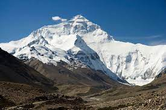
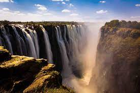
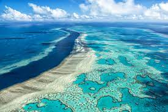
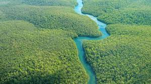
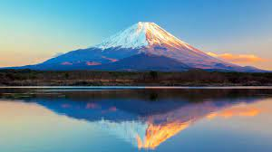
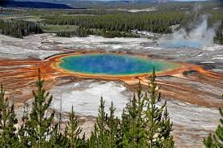

retour
Les Merveilles de la Nature
Explorez la beauté éblouissante de la nature à travers des photos captivantes. Des paysages à couper le souffle aux créatures fascinantes, cet article vous transporte dans un voyage au cœur de la nature.
| Nom de la Merveille | Type de Merveille | Emplacement | Description | Photo | Date de Découverte |
|---|---|---|---|---|---|
| Mont Everest | Montagne | Himalaya, Népal/Chine | Le Mont Everest, la plus haute montagne du monde, est une icône de la nature majestueuse. Son ascension est le défi ultime pour les alpinistes du monde entier. |  | 29 mai 1953 |
| Chutes Victoria | Chutes d'eau | Zambie/Zimbabwe, Afrique | Les Chutes Victoria, situées sur le fleuve Zambezi, sont parmi les plus grandes et les plus spectaculaires chutes d'eau au monde, formant un rideau d'eau impressionnant. |  | 17 novembre 1855 |
| Grande Barrière de Corail | Récif de corail | Queensland, Australie | La Grande Barrière de Corail est le plus grand système de récifs coralliens au monde, abritant une incroyable biodiversité marine. C'est un site du patrimoine mondial de l'UNESCO. |  | 1770 |
| Forêt Amazonienne | Forêt tropicale | Amérique du Sud (Brésil, Pérou, Colombie, etc.) | La Forêt Amazonienne est la plus grande forêt tropicale du monde, abritant une diversité incroyable d'espèces végétales et animales. C'est le poumon de la Terre. |  | N/A |
| Mont Fuji | Volcan | Honshū, Japon | Le Mont Fuji, symbole emblématique du Japon, est un stratovolcan actif. Sa forme symétrique et sa beauté ont inspiré de nombreux artistes et poètes. |  | N/A |
| Parc National de Yellowstone | Parc national | Wyoming, Montana, Idaho, États-Unis | Yellowstone est le premier parc national au monde, célèbre pour ses geysers, ses sources chaudes, ses cascades et sa faune abondante, dont des bisons et des grizzlis. |  | 1er mars 1872 |